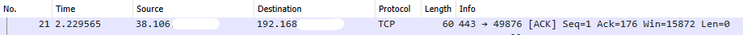

I have begun venturing into the exciting world of cyber security, and have
recently received my COMPTIA Network+ certification. Of course, there is
no better way to get to know something than through experience and hence I
wanted to go through a packet capture in order to test my understanding of
networking (and perhaps teach the reader a thing or two).
The application I used for the capture was Wireshark. Wireshark is a
free-to-use protocol analyser and essentially allows you to see what's
going on in your network.
Once Wireshark was downloaded, I selected `Wi-fi' as the interface of
choice.
Click Enter:
Immediately the logs begin to fill and I click Stop after about three
seconds, still enough time for about 30 packets to be captured. I was a
little surprised by this as I did not have any browser tabs open, or any
other applications for that matter. I selected a packet at random to
analyse.

Packet captured by Wireshark
Let's go through the packet column-by-column to see what we're working
with.
No.
This is simply the number of the packet, started from the beginning of the
packet capture. So when we hit `capture' initially, the first packet that
was captured would have been no.1, the second would have been no.2 and so
forth.
Time
This the time taken from the beginning of the packet capture. As you can
see, we were only 2s in to the capture and were already on the 21st
packet!
Source
This is the IP address of the source of the packet. I have blanked out the
final two bytes, but this was in the usual format in which we expect to
find IP addresses: XXX.XXX.XXX.XXX, where each byte is a positive integer
between 0 and 255.
Destination
Ditto to above, except applying to the destination address.
Protocol
This refers to the protocol the packet uses for transport. In this case,
we have TCP (Transmission Control Protocol). TCP is a reliable protocol,
meaning that the sender is notified when the packet is received. The other
transport protocol taught in the Network+ curriculum is UDP (User Datagram
Protocol). Glancing at the Wireshark logs, I can also see TLS, SSDP and
IGMP protocols. (Transport Layer Security, Simple Service Discovery
Protocol and Internet Group Management Protocol, respectively.)
Length
The `length' refers to the number of bytes of the frame captured, in this
case 60. The frame is the length of the payload of the packet. This does
not represent all the data contained in the entire packet, as things such
as encryption and headers will add to the total amount of data in the
packet.
Info
This column was, for me, the most difficult to decipher. The `info' reads:
443 -> 49876 [ACK] Seq=1 Ack=1 Win=15872 Len=0
The first two numbers are ports - this is evident from the 443 port, which
is well-known (HTTPS). I had not seen 49876, but a quick speedguide did
not have this port listed.
[ACK] refers to the second flag in the TCP handshake process whereby a
device aknowleges a [SYN] flag requesting the establishment of a
connection to a server. This is also tied to Seq = 1 : if we start
counting from 0, SYN is the 0th step in the TCP handshake sequence, ACK is
the 1st.
Ack = 176 refers to the 176th ACK number in the relative ACK sequence.
Win = 15872 refers to the calculated window size. This is the amount of
data (in bytes) that can be received in a buffered connection.
Len = 0 means that the packet had no payload. One device was merely
informing another about something. In this case, sending through an ACK.
Inference
From this we can infer the packet captured was an exchanging of an ACK
flag to initiate a connection. There was no payload for the packet. The
source port was 443, the HTTPS port. The destination port was an unknown
open port on the host device.
It is rather frightening, incredible, exciting and a little terrifying the
amount of information available on each packet of information that passes
through a network.